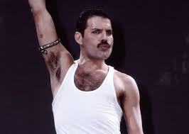

Nacido como Farrokh Bulsara, fue el legendario vocalista de la banda británica Queen.
Reconocido por su poderosa voz y su carisma electrizante en el escenario, compuso éxitos mundiales como
"Bohemian Rhapsody", "We Are the Champions" y "Somebody to Love".
Es considerado uno de los mejores cantantes de la historia del rock.